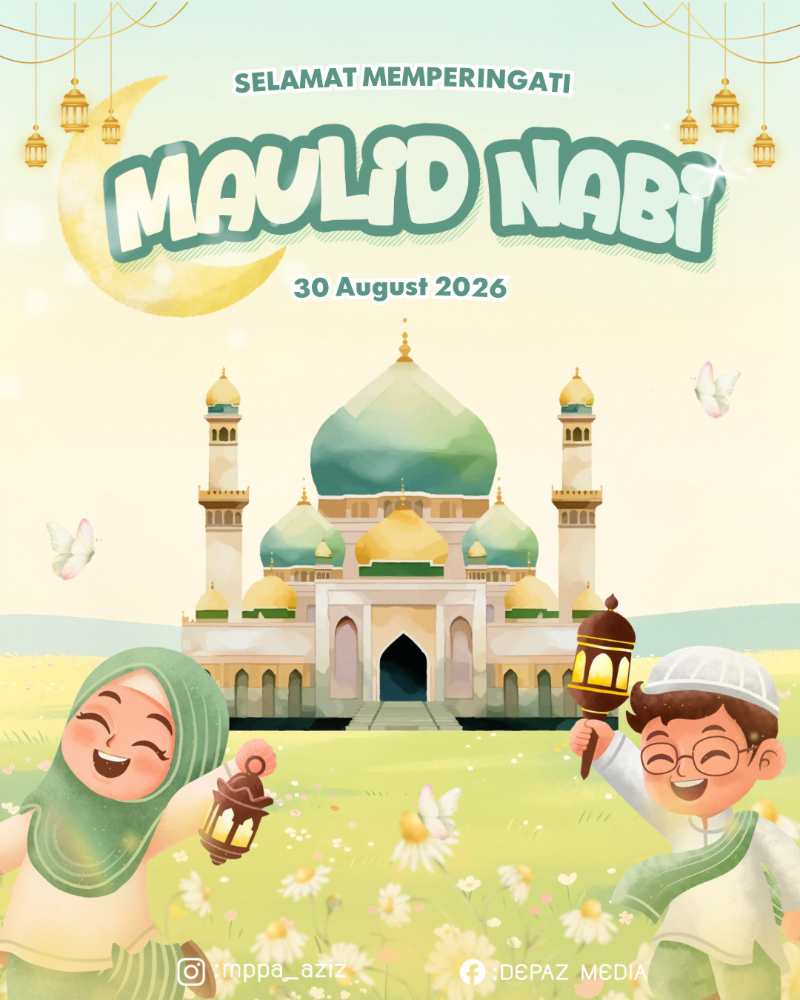

วัตถุประสงค์
งานเมาลิดนบีจัดขึ้นเพื่อรำลึกถึงการประสูติของท่านนบีมูฮัมมัด ﷺ ศาสดาแห่งอิสลาม เป็นการแสดงความรักและ เคารพต่อท่าน ตามที่อัลลอฮ์ ﷻ ตรัสไว้ในอัลกุรอาน งานนี้จัดขึ้นเพื่อเสริมสร้างความรักและความผูกพันต่อท่านนบี มูฮัมมัด ﷺ ในหมู่นักเรียนและบุคลากร ตลอดจนส่งเสริมค่านิยมอิสลามอันดีงามในสถานศึกษา
กิจกรรมภายในงาน
ภายในงานประกอบไปด้วยกิจกรรมที่หลากหลาย เพื่อให้นักเรียนได้เรียนรู้และสัมผัสถึงความสำคัญของวันเมาลิด
หลักฐานจากฮาดิษ
การรำลึกถึงท่านนบีมูฮัมมัด ﷺ และการกล่าวเศาะละวาตเป็นสิ่งที่มีหลักฐานจากฮาดิษที่ถูกต้อง (เศาะฮีฮ์)
ความสำคัญของงานเมาลิด
งานเมาลิดนบีเป็นโอกาสสำคัญในการเสริมสร้างจิตวิญญาณแห่งศรัทธา ทำให้เยาวชนได้เรียนรู้ประวัติศาสตร์อิสลาม และเข้าใจถึงแบบอย่างอันงดงามของท่านนบีมูฮัมมัด ﷺ ในด้านคุณธรรม ความเมตตา ความยุติธรรม และการอยู่ร่วมกันอย่างสันติสุข นอกจากนี้ยังเป็นการสร้างความสามัคคีในหมู่นักเรียน ครูอาจารย์ ผู้ปกครอง และชุมชนรอบข้างอีกด้วย
โปสเตอร์งาน

โปสเตอร์ประชาสัมพันธ์งานเมาลิดนบีมูฮัมมัด ﷺ ประจำปี 2569